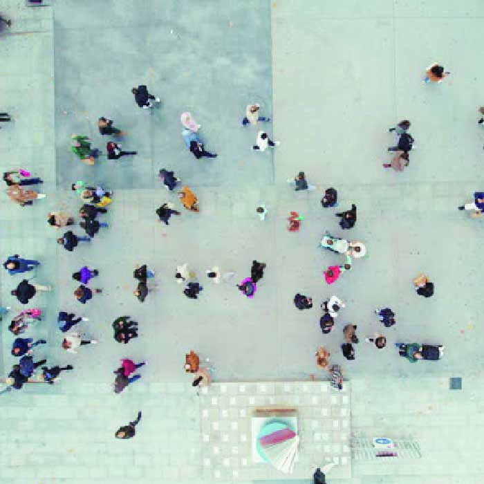
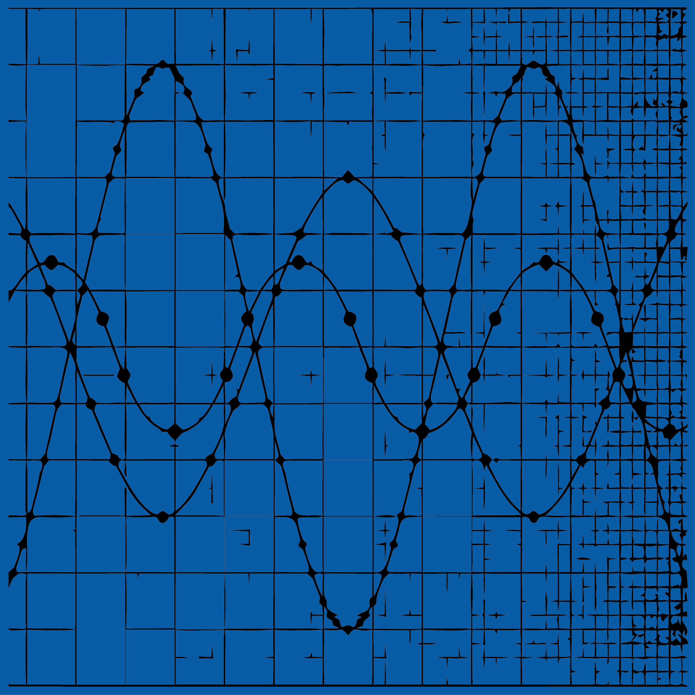
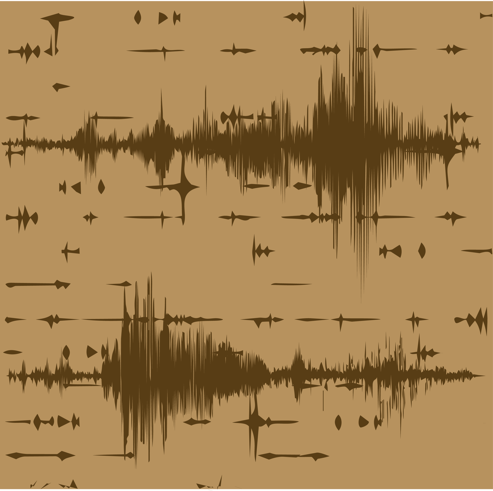
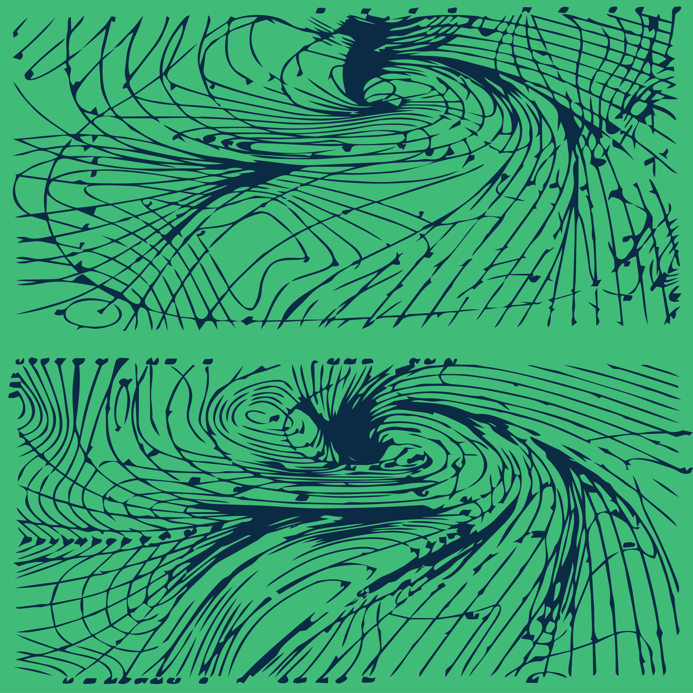
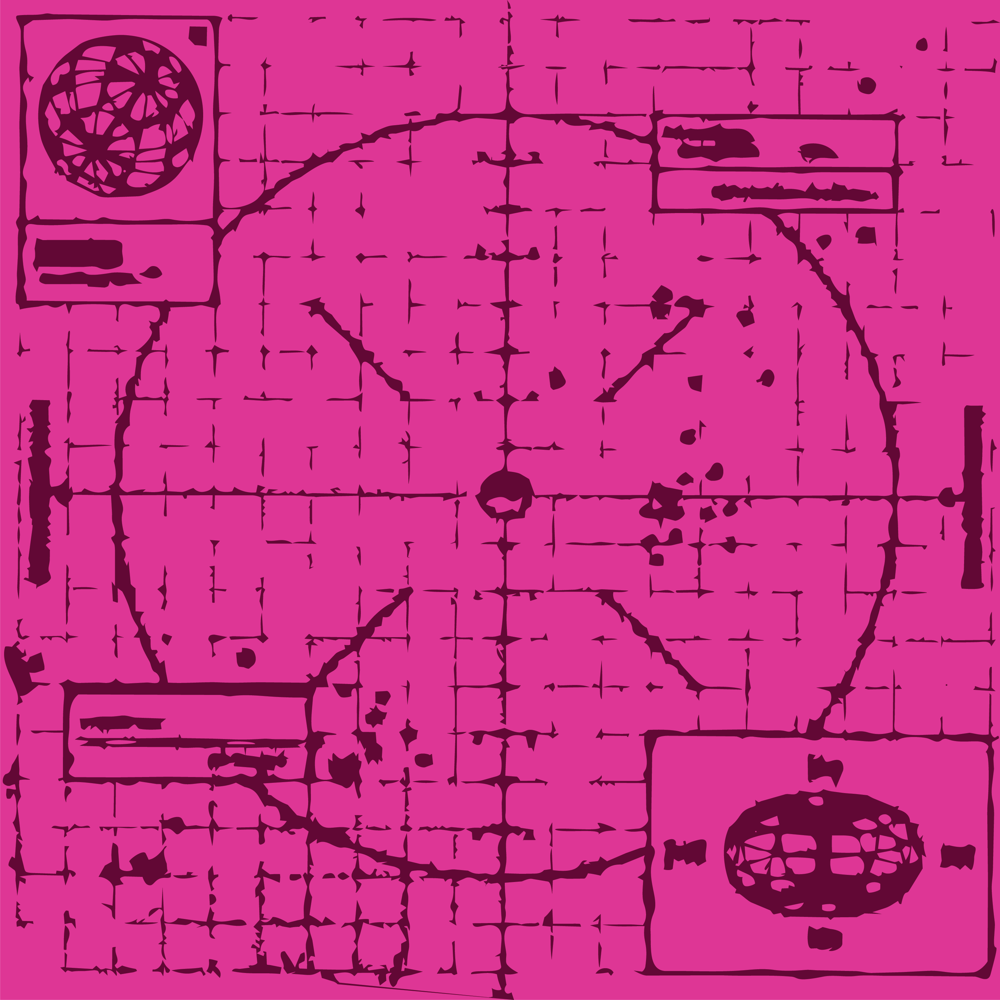
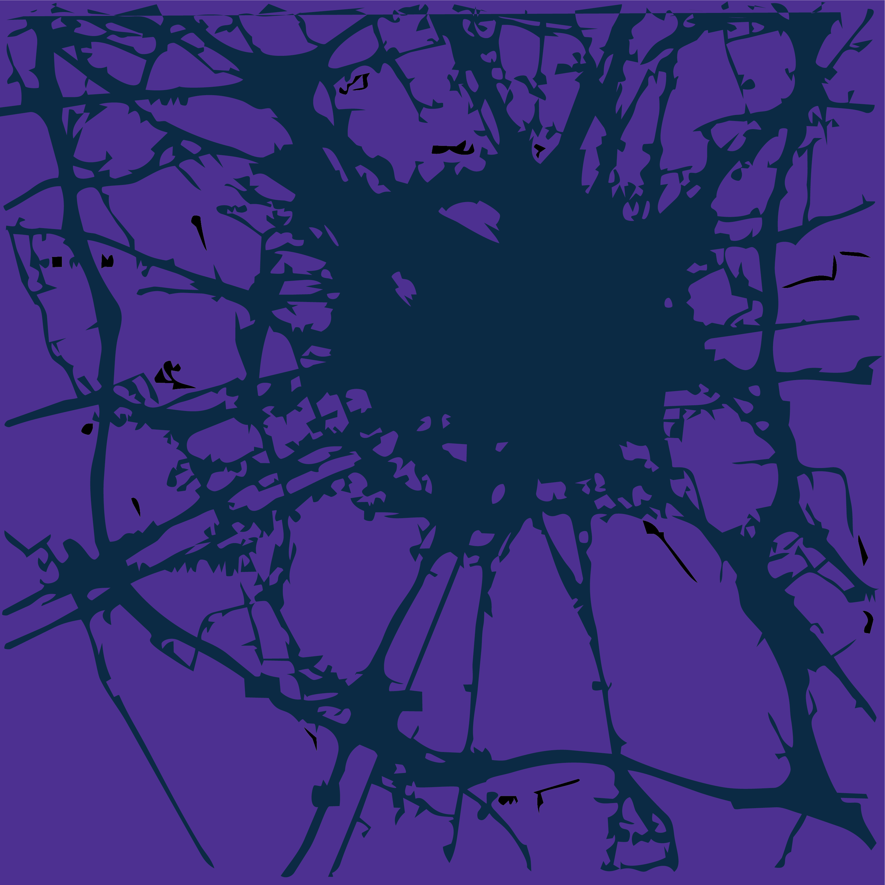
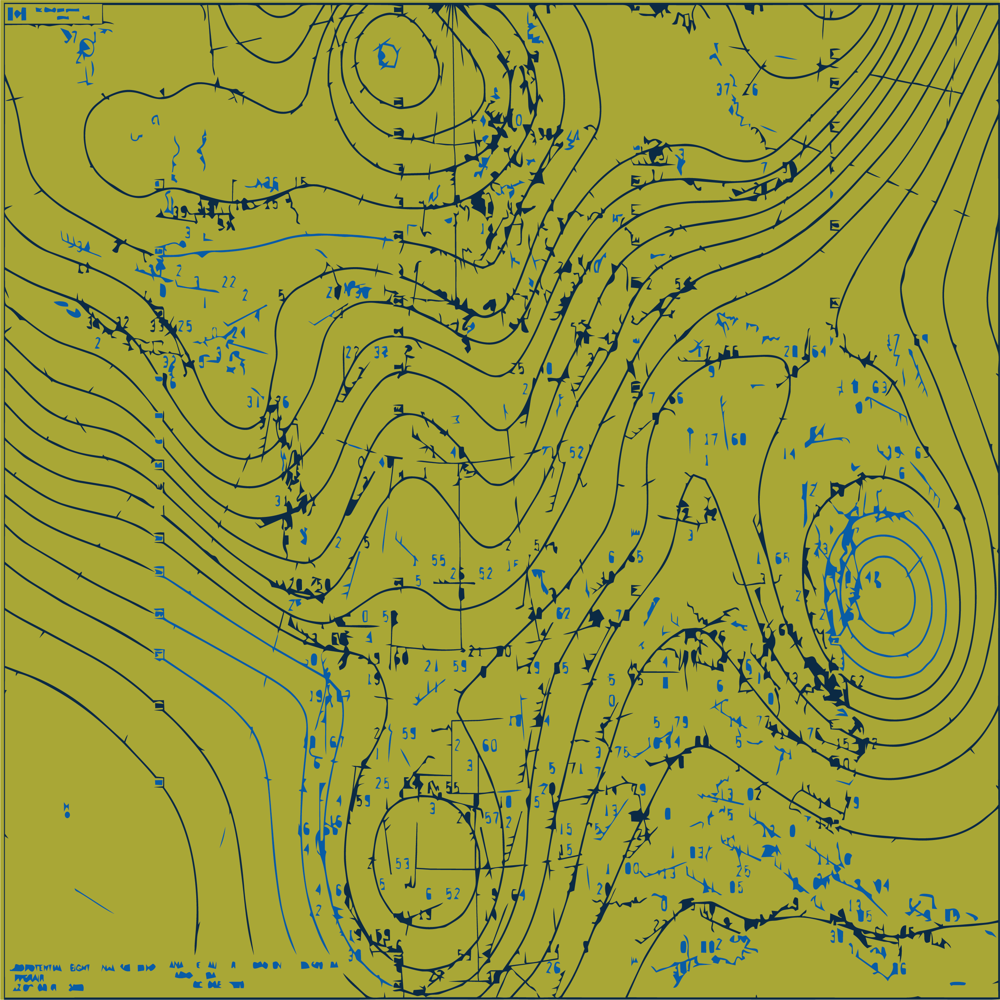

Start at the origin, and move through the layers of Stacked Reality.
Each layer reveals a different scale of the world, from the intimate to the planetary, showing how invisible systems of connection and observation quietly shape our experience of space and time.







What feels permanent at one scale disappears at another. A person becomes a window of light within a city, the city dissolves into networks and infrastructure, and the planet itself becomes suspended within layers of satellites, signals, and systems moving silently overhead. At every shift in scale, familiar spaces begin to transform into something larger and less visible—streets into data pathways, oceans into communication corridors, orbit into a dense shell of surveillance and connection. Beyond the visible world exists a stacked reality of unseen networks woven through streets, oceans, orbit, and atmosphere, operating constantly beyond human perception. These systems pulse quietly in the background of everyday life, shaping movement, communication, observation, and connection without ever fully revealing themselves. Stacked Reality moves through these shifting scales, revealing a modern world shaped not only by physical space, but by the invisible structures quietly looming around us.